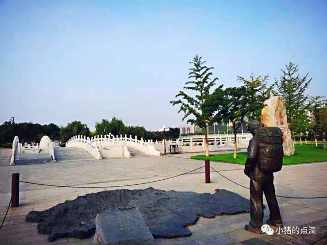

Changyang Park is located in Fangshan District, Beijing, also known as Fangshan New City Waterfront Forest Park. The park has beautiful scenery, lush flowers and quiet environment. It mainly has three parts: urban comprehensive area, wetland display area and country ecological area. It is distributed with Huaqiu Shi, Huancui Island, green shade labyrinth, condensate autumn color, leisure walk, etc. Attractions. Self-service ater dispenser,Jianbu Road in the park. There are many trees and plants, and the environment is good. The air is fresh and suitable for walking. There are some landscape sculptures in the park. The park is always filled with a laid-back atmosphere, Let your nervous nerves relax. Crossing the river stones of reeds and lotus leaves, Looking at the rows of reflections moving in the river, Facing the warm sunshine.

Vestibulum eu lacinia orci. Donec semper a ligula sed scelerisque. Mauris sapien metus, finibus at tempus a, tempus nec felis. Phasellus iaculis risus libero.